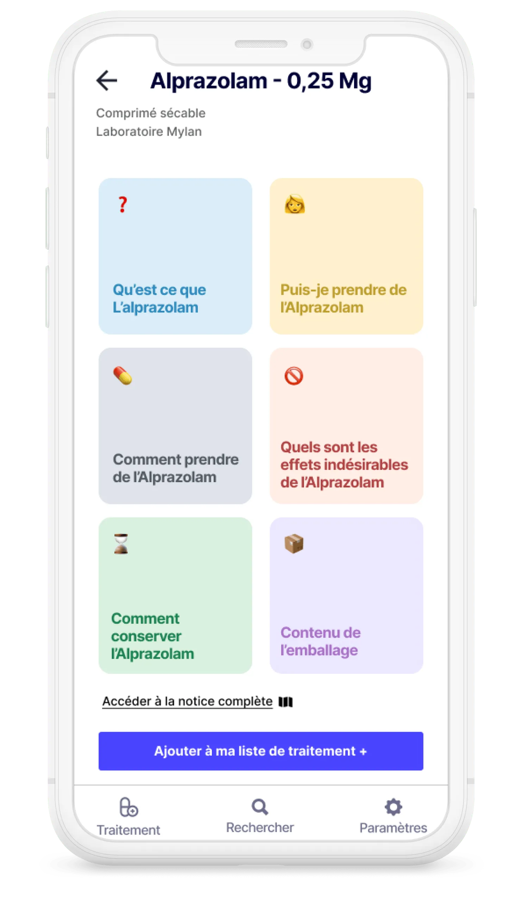
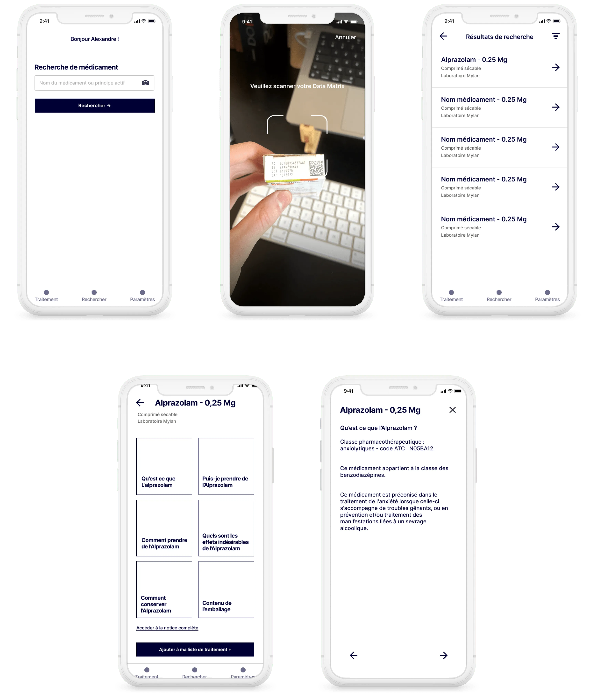
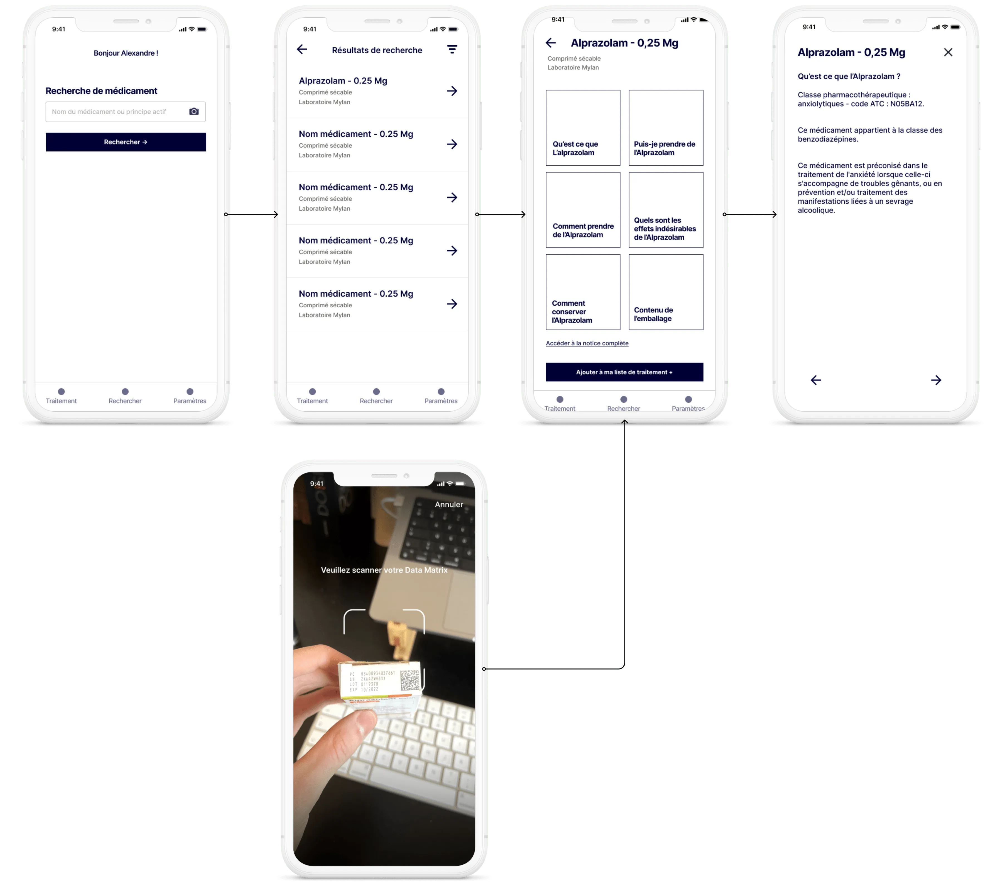
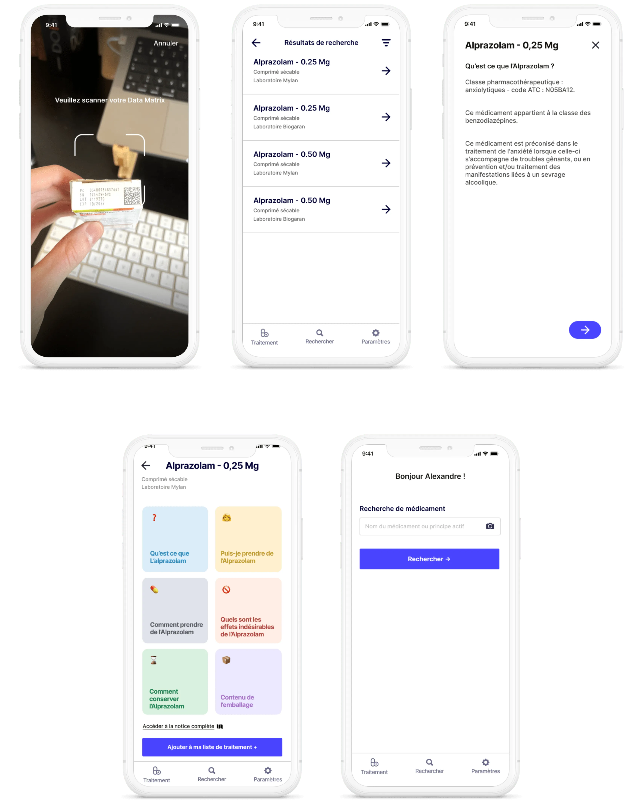

Études de cas
Rendre les notices de médicaments plus accessible
Contexte
Cette mission a été réalisée individuellement dans le cadre scolaire en 3 séances de 3h30 pour l’école Digital Campus Lyon. L’exercice a été initié par Louis Gounon, chef de projet innovation pour ExoFlow.
Résultat
✷ Meilleure compréhension des risques (70% des usagers se dirigeaient en premiers temps vers la catégorie des risques du médicament).
✷ Meilleure compréhension des voies d’administration (67% des usagers ont déclaré avoir mieux compris les voies d’administration que sur une notice papier).
État actuel
Les notices des médicaments sont longues et indigestes. Ce qui peut se révéler problématique dans la mesure où il est impératif de les lires dans le cadre d’un traitement médicamenteux important. Le site hopital.fr révèle que 33% des Français ne lisent pas ou peu les notices.
Recherche
J’ai conduit 10 interviews auprès de l’administration et des élèves de l’école Digital Campus, voici ce qu’ils ont dis :
1.“Le format papier n’est vraiment pas pratique, ça ne me donne pas envie de prendre le temps de lire”
2.“J’ai vraiment du mal à trouver l’information que je cherche, de manière générale je cherche les risques en priorité.”
Objectif
J’ai pu donc, grâce à tous ses éléments, dégager une problématique pour garder un cadre : “Comment permettre aux usagers de traitements médicamenteux d’être plus au fait concernant leurs traitements ?”
Idéation
De cette problématique, plusieurs idées ont émané, la première consistait à totalement repenser l’architecture d’information de la notice papier. Le problème de celle-ci est que le support papier est un problème en lui même. L’option 2 était d’afficher les notices sous un format d’application, en scindant au mieux l’information, tout en gardant le même contenu. J’ai gardé cette option.
Wireframe
À partir de cette idée, j’ai pu commencer à créer les premiers wireframes.
User flow
Pour définir au mieux les besoins des utilisateurs, et être sûr de ne pas se tromper de chemin, il a fallu imaginer les différents parcours possibles.
Design hi-fi
Après une phase de test concluante sur les wireframes, j’ai pu commencer la conception haute-fidélité.
Apprentissage
Sur le plan technique, j’ai pu comprendre l’impact du wireframe et à quel point il était utile pour concevoir une solution juste. J’ai également appris qu’il fallait parfois concevoir moins pour aller droit au but et que certaines fonctionnalités n’était pas indispensables et qu’il valait mieux qu’une solution réponde correctement à un problème, plutôt que de vouloir implanter plusieurs solutions pour répondre moyennement à un besoin.
Voir aussi : Faciliter le processus d'achat dans des distributeurs automatiques de nourritures →